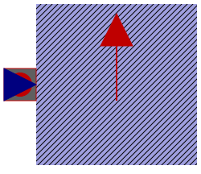

.
Modelica
.
Electrical
.
Machines
.
Interfaces
.
DCMachines
.
PartialThermalAmbientDCMachines
Information
Partial thermal ambient for induction machines
Generated at 2018-10-20T17:02:17Z by
OpenModelica 1.13.0~dev-1491-g87333c1